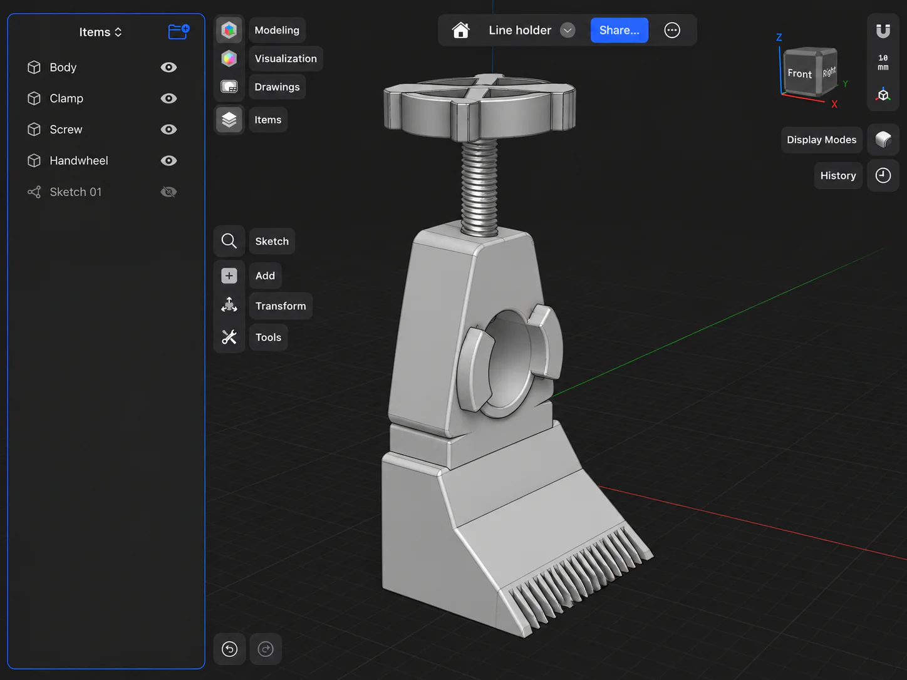
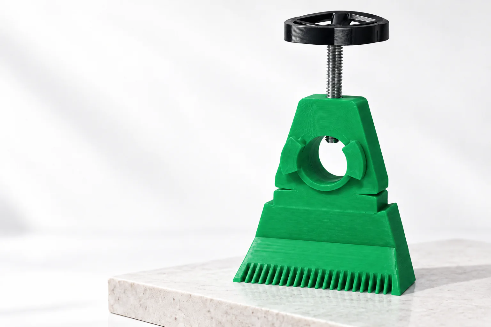

Od pomysłu do przedmiotu01
Pomysł nabiera kształtu.
Projekt na ekranie to dopiero początek. Druk 3D pozwala zamienić go w coś namacalnego.
SI 3D PROJECT / Pomysł na dobrą pracę
Od projektu na ekranie do narzędzia, które ułatwia pracę. Poznaj nasz uchwyt do sznurka brukarskiego, wykonany w druku 3D.

Przemyślane od początku
Liczy się każdy etap.
I to, jak sprawdza się na co dzień.
Projekt na ekranie to dopiero początek. Druk 3D pozwala zamienić go w coś namacalnego.
Przemyślana forma i dopracowane szczegóły. Warstwa po warstwie.
Ten sam sprawdzony projekt, w kolorze, który pasuje do Ciebie.

Uchwyt do sznurka brukarskiego
Ten sam dopracowany projekt.
W kolorze, który lubisz.
SI 3D PROJECT / Kontakt
Napisz do nas. Chętnie pomożemy.
studio@example.com